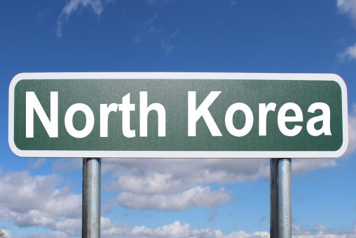

Overview of Censorship in North Korea
Juche
Juche is the North Korean ideaology of self-reliance. This ideaology is one of the main justifications for North Korean Censorship. Juche encourages the indepednce of the masses of the people. To achieve true indepence it is believed that citizens should be free of any outside influences.
State Control
Based on the ideaology of Juche the state maintians control of all forms of media accessed in North Korea. Freedom of Speech is not available to North Korea's citizens. Citizens are also unable to access foreign media without punishment. Punishment for acting outside of these limits can range from being imprisoned in a political camp to death.
Censorship and Propaganda as a citizen
Childhood
The enforcment and instillment of propoganda and censorship begins when citizens are children. In schools students are taught about the state's rulers through music and theater.
Adulthood
During adulthood citizens are strictly survielled. There are neighboorhood patrol personel that survey neighboorhoods for criminal activity. Citizens are not allowed access to cellphones, foreign television or radio stations, or news outlets.
Why there is Censorship in North Korea
- To maintain political control
- To enforce Juche
- For National Security
North Korea by Nick Youngson CC BY-SA 3.0 Pix4free.org